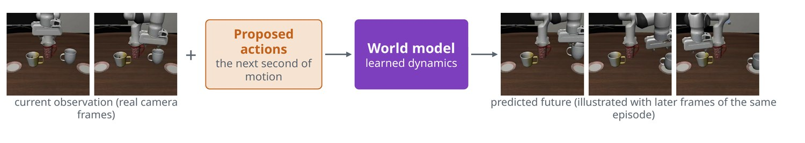
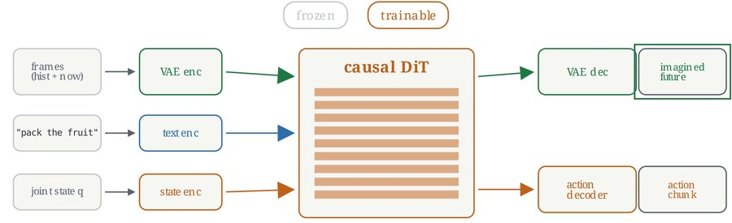
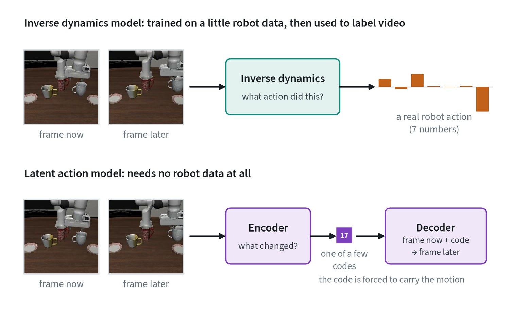
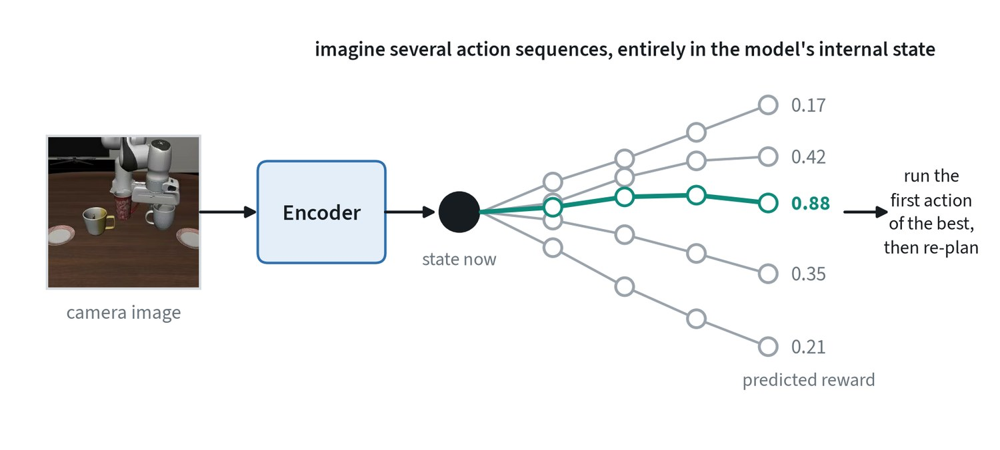
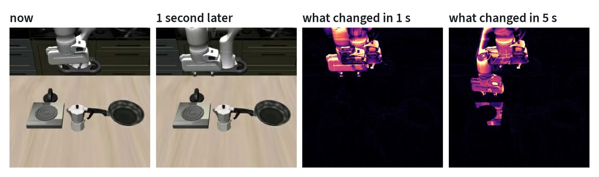
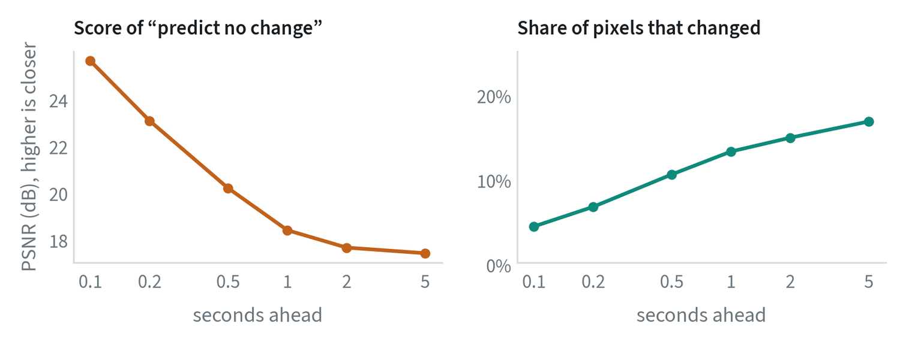

Learning to predict what happens next
A policy answers “what should I do?”. A world model answers “what will happen if I do this?”. It takes the current situation and a proposed action and predicts the outcome.


The idea is old in control: build a model of the dynamics and use it to plan. What is new is learning that model from video at scale, using the generative methods in the generative modeling note. An action-conditioned video model takes recent frames and a sequence of robot actions and generates the frames that would follow.
Robots want this for two reasons. They can try actions in imagination before the real world, and video is plentiful, so it teaches physics without anyone labelling actions. The bar is high, though. The model must get contact, occlusion and object permanence right, and it must show the consequences of the action, not just plausible video.
The objectives
Write for an observation, for an action and for a compact latent state. A world model is a learned approximation to how the world evolves under actions:
The pixel form is trained as a conditional generative model, usually by diffusion or flow matching in an autoencoder’s latent space, with the actions as conditioning. The latent form is trained by regression in representation space against a slow-moving target encoder:
A world-action model generates actions and future observations together, with one network and a joint objective:
Both terms are denoising losses of the same form, applied to different tokens of one sequence. An inverse dynamics model is the conditional the other way round, , which is why it is easier to learn: both ends of the motion are visible.
World-action models: predict and act in one model
A newer approach trains one network to produce both the future and the actions that cause it, where older designs kept the policy and the world model separate.


The bet is that a model which can predict what its actions will cause has learned something a pure policy has not. Predicting the future gives a training signal on every pixel, or every latent value, of every frame, while imitating actions gives only a few numbers per step. At run time the future prediction can be skipped to save compute.
The main design choice is what to predict. Pixels are easy to inspect but spend capacity on appearance. Latents are cheaper and focus on what matters but are harder to check. This is the same debate as in representation learning. It is an active research direction and the results are still coming in, so treat it as a bet and not a settled answer.
Getting actions out of video
Video is plentiful and has no action labels. Two methods supply them.


- Inverse dynamics. Train a model on a small amount of robot data to answer: given this frame and the next, what action was taken? Then run it over unlabelled video. This is an easier problem than control, because the model sees the outcome.
- Latent actions. Train an encoder to summarise the change between two frames as one of a small number of codes, and a decoder to predict the next frame from the current frame and that code. The codes end up meaning things like “move left” or “close”. A policy can be pretrained to predict them and then mapped to real actions with a little robot data.
Both turn human and internet video into something a robot policy can train on. Neither recovers force, and both inherit whatever the video leaves out of view.
Planning inside the model


A world model does not have to produce video to be useful. A latent dynamics model encodes the observation into a small state and predicts the next state and the reward directly. Because no pixels are generated, thousands of imagined futures cost little.
Two uses are established in reinforcement learning. One trains a policy entirely on imagined rollouts. The other plans at run time, as in the figure: sample action sequences, score them in the model, execute the first action of the best, and repeat. The second is model-predictive control with a learned model.
The baseline every world model must beat




In manipulation video, almost nothing moves. One second ahead, 13% of the pixels have changed, and after five seconds 17%. A model that outputs the current frame unchanged scores 25.6 dB at a tenth of a second and still 18.3 dB at one second, without having predicted anything.
Two consequences follow. A reported image-similarity score means little without this baseline beside it, because most of the score is the static background. And the pixels that do change are the arm and the object it touches, which are exactly the ones a policy cares about and the hardest to predict. A useful evaluation weights or crops to the region that moves, or bypasses pixels and asks whether the predicted video implies the right actions.
Three uses, and one caution
- Evaluate policies. Roll a policy out inside the model and not on a robot. It is cheap, fast and safe, and useful for ranking checkpoints before real tests.
- Generate data. Produce new scenes, lighting and viewpoints to stretch scarce demonstrations. The generated video needs actions that match it.
- Plan. Imagine several action sequences, score the outcomes and execute the best. This is slow today and used mostly for high-level decisions.
The caution is that a learned model can produce physics that looks right and is wrong, and its errors grow with the length of the rollout. An optimistic simulator will rank bad policies highly. The check that matters is whether success inside the model predicts success on the robot, for the same set of policies.
How world models are scored
| Measure | What it tells you | What it misses |
|---|---|---|
| Frame similarity (PSNR, SSIM, LPIPS) | How close each predicted frame is to the real one | Rewards blur; punishes a plausible future that differs from the recorded one |
| FVD | Whether the generated clips look like real ones as a set | Says nothing about following the action |
| Action following | Whether the predicted video shows the commanded motion, for example by recovering the action from it | Needs a second model to judge |
| Policy ranking | Whether policies that do well in the model do well on the robot | Costs real robot trials to establish |
Only the last row measures what a world model is for. The others are useful on the way there.
Common mistakes
- Judging by how the video looks. Plausible is not the same as correct. Check outcomes against reality.
- Long rollouts. Small errors compound, as they do for policies.
- Ignoring the action. A model that produces the same future whatever the action is a video model, not a world model.
Terms
- World model
- A model that predicts future observations given actions.
- Rollout
- A sequence of predictions, each built on the last.
- Action-conditioned
- Predictions that depend on the action given.
- World-action model
- One model that outputs both future observations and actions.
- Inverse dynamics model
- A model that infers the action taken between two observations.
- Latent action
- A learned code that stands for the change between two frames, with no robot action label.
- Model-predictive control
- Planning a short sequence, executing its first action, and planning again.
- Persistence baseline
- Predicting that the future frame equals the current one; the score any world model must beat.
- PSNR
- Peak signal-to-noise ratio: a logarithmic measure of pixel error between two images, in decibels.
In my work
Further reading
- Ha and Schmidhuber, 2018. World Models.
- Assran et al., 2025. V-JEPA 2: Self-Supervised Video Models Enable Understanding, Prediction and Planning.
- Ye et al., 2026. World Action Models are Zero-shot Policies (DreamZero).
- Baker et al., 2022. Video PreTraining (VPT): Learning to Act by Watching Unlabeled Online Videos.
- Ye et al., 2024. Latent Action Pretraining from Videos.
- Bruce et al., 2024. Genie: Generative Interactive Environments.
- Hafner et al., 2023. Mastering Diverse Domains through World Models (DreamerV3).
- Hansen et al., 2023. TD-MPC2: Scalable, Robust World Models for Continuous Control.